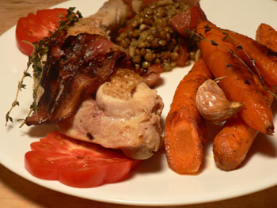

Spiced lentils and roasted carrots
This month’s Gourmet has a spread on April Bloomfield, the chef at Manhattan’s The Spotted Pig. I was excited to see it, as I have fond memories of the passed hors d’oeuvre on offer at Nathan’s company’s Christmas party, which was held at the Michelin-starred Pig last year. Bloomfield seems to be interested in the kind of food that I love: hearty, mouth-filling combinations of sweet and salty. Nothing too fussy. Tonight, I made her spiced lentils and roasted carrots, and I teamed them with bacon chicken:

Of course, neither of these recipes appear at epicurious, which always seems to happen when I want my people to actually make something. Never fear; I will transcribe them below. The carrots were the highlight. I rarely make carrots, although they are perfectly easy, good for me, and good to eat. And I have never made lentils before. I didn’t know what to expect in the cooking process, but it seemed to go off without a hitch. I’d like them to taste a bit less chalky, but that may be the nature of French lentils. These were loaded with spices, perfect after a day of drinking sweet Hoegaarden at a hipster bar in Brooklyn (don’t worry, Mom, I went jogging too!).
Roasted carrots with thyme and garlic
- 2 tablespoons olive oil
- 2.5 pounds carrots, peeled and halved lengthwise diagonally
- 1 tablespoon butter
- 1 head of garlic, cloves separated
- 3 sprigs thyme
- 1/4 teaspoon Maldon sea salt
- 1/8 teaspoon black pepper
- 1/2 cup water
Preheat the oven to 400ºF. Heat oil in a 12-inch heavy ovenproof skillet until beginning to smoke, then add half the carrots, cut sides down, and cook until they brown (12 to 15 minutes). Transfer to a plate, and repeat with remaining carrots but leave them in the skillet. Add the butter, stir, and return the other carrots to the skillet (I didn’t bother with all this back and forth—I just cooked them all at once and added the butter when I felt like it). Add the garlic, thyme, salt, pepper, and water, cover with aluminum foil, and roast for 20 minutes. Remove the foil, turn the carrots, and roast for 20 minutes more, until the carrots are tender and you can’t resist them any longer. (To make bacon chicken, take the carrots out of the pan, throw some bacon in, let the fat render, then cook chicken legs, skin-side down, until the skin turns crispy. Turn them over, add a bit of white wine or broth or water, cover, and cook for 20 minutes or so, until the juices run clear. Season as you like.)
Spiced lentils
Bloomfield insists on using “fresh” dried spices here, which is totally ridiculous. You’d spent $50 just to make lentils. See notes below.
- 2 tablespoons coriander seeds (I used the ground I already had)
- 1 teaspoon cumin seeds
- 1.5 teaspoons fennel seeds
- 1/4 teaspoon turmeric (I used my curry powder)
- 1/4 teaspoon ground ginger
- 1/4 teaspoon ground cinnamon
- 1/4 teaspoon ground allspice
- 1/4 teaspoon chili powder (I used cayenne pepper)
- 1.5 tablespoons olive oil
- 1.5 tablespoons finely chopped garlic (4 cloves)
- 1/2 cup drained canned tomatoes, chopped
- 1 tablespoon fresh grated ginger
- 1 1/3 cups small French green lentils
- 5 cups water
Toast the whole spices, grind or pulverize them with a mortar and pestle, and mix them with the ground spices. Heat the oil, cook the garlic for thirty seconds, and add the spices. Cook for a minute, add the tomatoes and half the fresh ginger and cook until the liquid evaporates, about 2 minutes. Add the lentils and water and simmer, mostly covered, for 25 to 30 minutes or until tender. Stir in the sea salt and remaining fresh ginger, turn off the heat, let stand 15 minutes, and serve with a slotted spoon.
Comments
Thanks so much for transcribing the lentil recipe! I love her food at TSP – and I’m always looking for new ways to prepare lentils…
I like your approach to the lentil dish . . . we make something similar and use ground spices and sub curry powder for tumeric and such.
I consider this kind of make-do approach as practice or rehearsal for the day when we have the money and leisure to buy and grind fresh spices for a lentil dinner. Should this day ever come . . .
Most of the recipes I’ve seen for this kind of spicy lentil dish add a dash of lemon at the end . . . Oh wait, maybe not with the tomato . . .
And sometimes we add the carrots right into the lentils and they lend a creamy counterpoint inside the stew.
Yum. I’m always looking for a good carrot recipe.
Oh my goodness, you two have been busy. I just duck out for a few days and now I return to find you overflowing with new recipes I want to make.
I used to make lentils all the time and love them with lots of spices.
I also can’t wait to try Rebecca’s coconut bread. I recently heard of a Green Tea cake and wonder if she’s come across such a thing.
This is to report that the coconut bread is wonderful. I was afraid it would be too sweet but not so, and nicely chewy.
Hi, yt, welcome back! Everyone else seems to have had better luck with the coconut bread than I did, so I think I need to make it again and follow the directions more closely this time! And no, I’ve never heard of green tea bread, but the woman who writes the cupcake bakeshop, chockylit, made green tea cupcakes once that sounded really intriguing. She used some kind of green tea concentrate, if I’m remembering correctly.
Leland, I know what you mean about the insistence on fresh spices and also think it’s ridiculous, especially if they are whole and you are toasting and grinding them. When I cleared out my kitchen I threw away all spices that I hadn’t used in a couple of years, and then when I made the ginger cookies last week I was really sorry; the recipe called for 1/2 teaspoon of ground cardamom, and when I went to replace what I had discarded a fresh bottle cost over $10!!! So now I have a new bottle of ground cardamom with 1/2 teaspoon removed that will probably sit there for 5 years, maybe getting used two or three more times. What a waste!
Add a comment